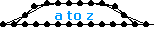
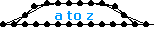

|
001-020
|
|
021-040
|
|
041-060
|
|
061-080
|
|
081-100
|
|
101-120
|
|
121-140
|
|
141-160
|
|
161-180
|
|
181-200
|
|
201-220
|
|
221-240
|
|
241-260
|
|
261-280
|
| 281 |
 |
name: Wavino
genre: zero-g/flex
comments: This is a huge elaboration upon a model I saw in Kevino's pub. I named it Wavino in attempt to make a clever reference to the person who inspired it. While it may look like a predecessor to my America model, that work started way back around model number 129. |
| 282 |
 |
name: Viscosity
genre: snake/flex
comments: I don't have any particular reason why I named this model Viscosity, but I suppose it looks a little like a pool of molasses flowing slowly across the floor. I saved time by scavenging part of my own Wavino for the construction. |
| 283 |
 |
name: daintyescher
genre: walker/motored
comments: The motor in the center of this model was submitted to the zoo one day under the name Escher's Pillar. I immediately put it to work in a walker but in retrospect I think the way I assembled it made the stride too large. As such it needed very little gravity to avoid being squashed mid-stride. |
| 284 |
 |
name: daintylinkage
genre: walker/motored
comments: This model presented me with a dilemma. I usually make my daintywalker tribute models with the same leg timing as the original. But the center of this model looked awfully funny that way so I switched it. The result looked like a geometric abstract painting to me prompting me to name it so. |
| 285 |
 |
name: Minutia
genre: walker/motored
comments: Minutia gets away with the leg timing scheme that daintylinkage could not pull off. It succeeds because each side only drives one set of legs rather than both. This avoids the ugly cluttered problem discussed in the prior model. |
| 286 |
 |
name: Cyanic
genre: walker/motored
comments: Cyanic is related to Cyan of course. It uses a MultiMotor combination but I don't think it is as effective visually as its processor or some later models of this type. |
| 287 |
 |
name: Magenta
genre: roller/motored
comments: This is my favorite model. I love how the legs attach to hubless wheels. I can't wait until the sodarace architecture is finished so I can see how this complicated but robust mechanism handles terrain. I also wonder how fast it can go because it was hitting the walls that really limited the tuning. |
| 288 |
 |
name: Porsche_Speedster
genre: roller/motored
comments: The old Porsche Speedster is one of my favorite cars ever. I really like its shapely fenders and the ridiculously low-slung windshield. Unfortunately, I could not find a graceful way to support the flex body panels in my version so it has a crosshatched look to it. |
| 289 |
 |
name: Hubcaps
genre: roller/motored
comments: This model uses the same wheels as Magenta and Porsche_Speedster because I liked the proportions very much. This simple compound linear combination is straight forward, but I like the effect of having the hubcaps spin in the opposite direction as the wheels. |
| 290 |
 |
name: Spheric
genre: roller/inertial
comments: This is an inertially motivated rolling model. It is powered by a linear combination with attachments so it functions like a Rotation Angle Motor. It originally had zip spring streamers hanging off the motor but I deleted them because it didn't fit in with the character of my other models. |
| 291 |
 |
name: Architype
genre: roller/motored
comments: This too uses the same wheels as Magenta. And like Palidrome, the program timing keeps the structure rigid even though it looks like it is just hinged. It took a little while to find the right length tension springs so the rotors would look right if I remember correctly. |
| 292 |
 |
name: America
genre: zero-g/flex
comments: This model took me far longer than any other to finish. It was so time consuming to construct and program that I just worked on it little by little over a few months. I might never have finished it if I hadn't wanted to get it out before the start of the Iraq war to show support for my country. |
| 293 |
 |
name: Kiloton
genre: walker/motored
comments: Kiloton has the same linear motor combination with RAM modifications as Spheric. It walks okay but has the same general problem as Muse does in that the stride is a little awkward. I think smaller motors or more space between them would've made it better. |
| 294 |
 |
name: Regent
genre: walker
comments: To my surprise, many people really enjoyed this model. It uses simple offset timing like many of my walkers, however the round legs give it an interesting look as it walks. Not surprising is that it has been confused with the similar looking model Hubcaps even though they share nothing else in common. |
| 295 |
 |
name: Half_Rotors
genre: walker/motored
comments: One day I was fiddling around with some rotor designs and I wondered if a suitably reinforced linkage could be made into a 4pt rotor with only half the usual muscles. It turns out that it could be made and this walker is the first result. And the wave pallet looks highly unusual for a walker. |
| 296 |
 |
name: Drivetrain
genre: roller/motored
comments: This is another idea that I had from the beginning but forgot about because I didn't have the required expertise at the time. It operates inertially and uses the same motor as Stalactites. My only regret is not using higher quality wheels because these ones seem reluctant to roll. |
| 297 |
 |
name: Dos_Equis
genre: roller/motored
comments: This model was built with virtually no overriding direction. I was just kind of constructing for fun and by the time I knew what I was doing I had made a nearly working concept. It just goes to show you how important the act of constructing is to the finished appearance of your models. |
| 298 |
 |
name: Motive
genre: roller
comments: Motive uses the same principle as Half_Rotors. I also choose the same basic wheel design first used in Sisyphus. I don't know if there is even a name for them yet. I didn't invent them but they always remind me of a woven basket. |
| 299 |
 |
name: HobGoblin_JeckyllStyle
genre: walker/motored
comments: One morning I saw a model in the zoo by Jeckyll. I immediately recognized that 3pt linear motors could be employed to power the mechanism so I deleted his motor and tried adding the current ones. It works basically the same way so I submitted it right away and credited Jeckyll. |
| 300 |
 |
name: Crete
genre: walker/motored
comments: Sometimes a model has just the right dimensions without you even having to try. In this case it just seemed that every decision I made regarding length and proportions worked out. I named it for an island south of Greece that I have always wanted to visit. |
|
301-320
|
|
321-340
|


 
